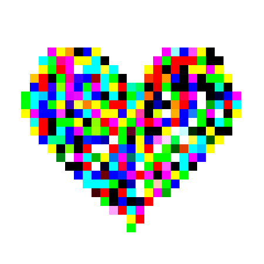

work harder, track your working time, stay active and productive.

Welcome to lolow! I'm Jasmine (I like to call myself Jasmon), I'm from Egypt, I'm 17 years old (13/08/2008)! I like designing playful and creative websites (uhmmm.... that's my first time to build a website alone from scratch >v<). I knew about programming very recently... like 8 months ago, and when I started, I really felt like this is my passion, I learnt (HTML, CSS, JavaScript, Python, C++, Arduino) through the 8 months! I tried both software and hardware but I found myself more into software, I'm passionate about a lot of fields like technology, environment and social issues. I am a bodybuilder (Yes! i really like lifting weights >~<) I discovered my passions and talents too late, but I'm happy because I'm still figuring out who I am... that's all guys! I hope you like my website as it's my first time to build one alone :>.
Pronouns: her/him/them
